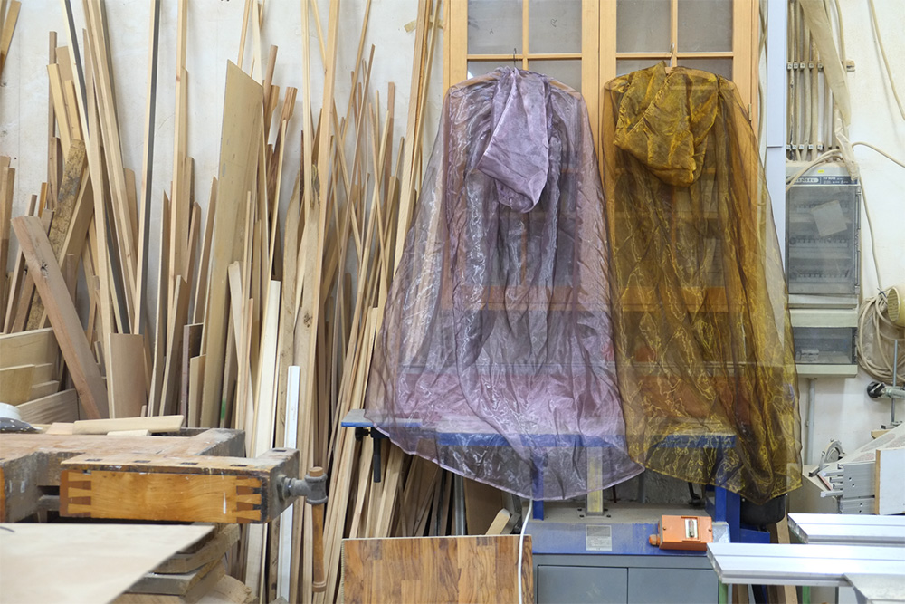

To Meet 
photo Yves Mettler We feel the body between us as it swells and deflates, a game-loving shapeshifter of metric space, time space, attention space. We keep this distance, our meeting, changing. We talk because it’s practical. We dance because it helps us think. We make it a game so that the duet’s spectre can keep fluttering in our peripheral vision, keeping tune and time. There is no ideal synchronization, no clear guidance, no unverified trust in our unison. We’re befriending each other, dancing together and learning from each other. One invites the other to dance. One wants to carry the other around. One teaches the other a poem and holds her heart.
Credits Concept, Choreography and Performance: Alice Chauchat invites Louise Trueheart Costumes: Annie Chauchat, with the support of Lise Lendais Light design: Gretchen Blegen Long-distance dramaturgy: Jennifer Lacey Production: Alice Chauchat Co-production: Louise Trueheart
To watch a video, please contact me directly
|